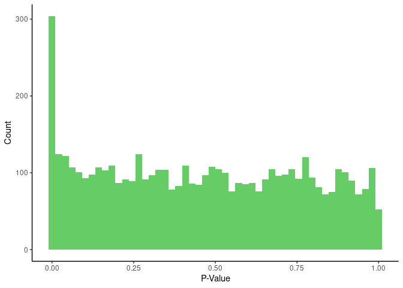
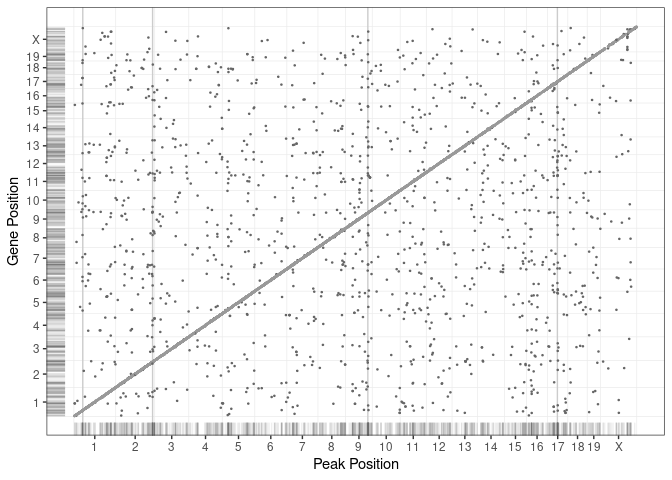
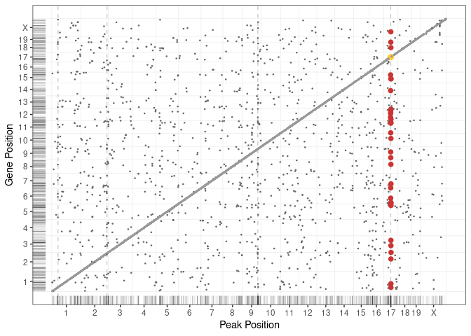
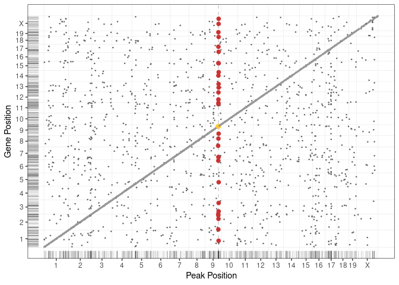

Last updated: 2024-03-29
Checks: 7 0
Knit directory: rta/
This reproducible R Markdown analysis was created with workflowr (version 1.7.0). The Checks tab describes the reproducibility checks that were applied when the results were created. The Past versions tab lists the development history.
Great! Since the R Markdown file has been committed to the Git repository, you know the exact version of the code that produced these results.
Great job! The global environment was empty. Objects defined in the global environment can affect the analysis in your R Markdown file in unknown ways. For reproduciblity it’s best to always run the code in an empty environment.
The command set.seed(20200501) was run prior to running
the code in the R Markdown file. Setting a seed ensures that any results
that rely on randomness, e.g. subsampling or permutations, are
reproducible.
Great job! Recording the operating system, R version, and package versions is critical for reproducibility.
Nice! There were no cached chunks for this analysis, so you can be confident that you successfully produced the results during this run.
Great job! Using relative paths to the files within your workflowr project makes it easier to run your code on other machines.
Great! You are using Git for version control. Tracking code development and connecting the code version to the results is critical for reproducibility.
The results in this page were generated with repository version 51ffc4d. See the Past versions tab to see a history of the changes made to the R Markdown and HTML files.
Note that you need to be careful to ensure that all relevant files for
the analysis have been committed to Git prior to generating the results
(you can use wflow_publish or
wflow_git_commit). workflowr only checks the R Markdown
file, but you know if there are other scripts or data files that it
depends on. Below is the status of the Git repository when the results
were generated:
Ignored files:
Ignored: .Rhistory
Ignored: .Rproj.user/
Ignored: analysis/figure/
Ignored: code/.Rapp.history
Ignored: data/.Rhistory
Ignored: data/RDS/
Ignored: run/
Untracked files:
Untracked: LICENSE
Untracked: Rplot.pdf
Untracked: SENSI_chr7_snps.R
Untracked: Untitled.R
Untracked: analysis/17_mapping_interpretation_old.Rmd
Untracked: analysis/temp.txt
Untracked: code/DO_IVSA_SALINE_pleiotropy.R
Untracked: code/DO_IVSA_SENS_pleiotropy.R
Untracked: code/DO_SENS_SALINE_pleiotropy.R
Untracked: code/DO_eQTL_perms.R
Untracked: code/DO_eQTL_score_calc.R
Untracked: code/SENSI_chr7_snps.R
Untracked: code/STAR_RSEM_416.sh
Untracked: code/eQTL_plotting_DO_striatum_416.R
Untracked: code/ggplot_pub_themes.R
Untracked: code/pleitropy_analysis.sbatch
Untracked: code/pleitropy_saline_analysis.sbatch
Untracked: code/pleitropy_sensi_saline_analysis.sbatch
Untracked: code/rta_mapping_figure_leftover.R
Untracked: data/20_elastic_mv_results.csv
Untracked: data/20_elasticnet_predictions.RDS
Untracked: data/DO_416_DGEList.RDS
Untracked: data/DO_416_DGEList_unfiltered (michael.saul@jax.org 2).RDS
Untracked: data/DO_416_DGEList_unfiltered (michael.saul@jax.org 3).RDS
Untracked: data/DO_416_DGEList_unfiltered (michael.saul@jax.org 4).RDS
Untracked: data/DO_416_DGEList_unfiltered (michael.saul@jax.org).RDS
Untracked: data/DO_416_DGEList_unfiltered.RDS
Untracked: data/DO_416_ERCC_DGEList.RDS
Untracked: data/DO_416_ERCC_cpm.RDS
Untracked: data/DO_416_normrt.RDS
Untracked: data/DO_416_pheno.RDS
Untracked: data/DO_416_pheno_allgenes.RDS
Untracked: data/DO_416_voom (michael.saul@jax.org).RDS
Untracked: data/DO_416_voom.RDS
Untracked: data/DO_416_voom_allgenes (michael.saul@jax.org 2).RDS
Untracked: data/DO_416_voom_allgenes (michael.saul@jax.org).RDS
Untracked: data/DO_416_voom_allgenes.RDS
Untracked: data/DO_416_voom_cpresiduals.RDS
Untracked: data/DO_AQ_active_CoV_toptable_annotated.RDS
Untracked: data/DO_AQ_lever_ratio_toptable_annotated.RDS
Untracked: data/DO_AQ_mean_inf_toptable_annotated.RDS
Untracked: data/DO_AQ_rate_toptable_annotated.RDS
Untracked: data/DO_IVSA_SALINE_pleio_lods.RDS
Untracked: data/DO_IVSA_SENS_pleio_lods.RDS
Untracked: data/DO_IVSA_SENS_pleio_pvl.RDS
Untracked: data/DO_IVSA_acquisition_cancor_df.RDS
Untracked: data/DO_IVSA_acquisition_logit_df.RDS
Untracked: data/DO_IVSA_acquisition_logit_glm.RDS
Untracked: data/DO_IVSA_all_cancor_df.RDS
Untracked: data/DO_IVSA_all_cancor_df_2024-03-27.RDS
Untracked: data/DO_IVSA_data.RDS
Untracked: data/DO_IVSA_novelty_cancor_ALL.RDS
Untracked: data/DO_IVSA_novelty_cancor_AQ.RDS
Untracked: data/DO_IVSA_novelty_data.RDS
Untracked: data/DO_IVSA_prediction_ACQUISITION_logit.RDS
Untracked: data/DO_IVSA_prediction_ACQUISITION_logit_2021-01-04.RDS
Untracked: data/DO_IVSA_prediction_ALL_cancor.RDS
Untracked: data/DO_IVSA_prediction_ALL_cancor_2021-01-04.RDS
Untracked: data/DO_IVSA_prediction_ALL_cancor_old.RDS
Untracked: data/DO_IVSA_prediction_AQ_cancor.RDS
Untracked: data/DO_IVSA_prediction_AQ_cancor_2021-01-04.RDS
Untracked: data/DO_IVSA_prediction_a1_ACQUISITION_logit.RDS
Untracked: data/DO_IVSA_prediction_a2_AQ_cancor.RDS
Untracked: data/DO_IVSA_prediction_a3_ALL_cancor.RDS
Untracked: data/DO_IVSA_prediction_a3_ALL_cancor_2024-03-25.RDS
Untracked: data/DO_IVSA_prediction_a3_ALL_cancor_2024-03-27.RDS
Untracked: data/DO_IVSA_prediction_a4_male_ALL_cancor.RDS
Untracked: data/DO_IVSA_prediction_a5_female_ALL_cancor.RDS
Untracked: data/DO_IVSA_raw_data.RDS
Untracked: data/DO_IVSA_transformed_data.RDS
Untracked: data/DO_LIMS_data.RDS
Untracked: data/DO_RTG_a1_new.qtl.RData
Untracked: data/DO_RTG_a1_new_1000x.qtlpermu.RData
Untracked: data/DO_RTG_a1_new_mapping_1000x.RData
Untracked: data/DO_RTG_a2_new.qtl.RData
Untracked: data/DO_RTG_a2_new_1000x.qtlpermu.RData
Untracked: data/DO_RTG_a2_new_mapping_1000x.RData
Untracked: data/DO_RTG_a3_new.qtl.RData
Untracked: data/DO_RTG_a3_new_1000x.qtlpermu.RData
Untracked: data/DO_RTG_a3_new_mapping_1000x_01.RData
Untracked: data/DO_RTG_a3_new_mapping_1000x_02.RData
Untracked: data/DO_RTG_a4_new.qtl.RData
Untracked: data/DO_RTG_a5_new.qtl.RData
Untracked: data/DO_RTG_elasticnet_new.qtl.RData
Untracked: data/DO_RTG_elasticnet_new_mapping_1000x.RData
Untracked: data/DO_RTG_project_df_for_mapping.RDS
Untracked: data/DO_RTG_project_df_for_mapping_2020-11-06.RDS
Untracked: data/DO_RTG_project_df_for_mapping_a2.RDS
Untracked: data/DO_RTG_project_df_for_mapping_sexspecific.RDS
Untracked: data/DO_SENS_SALINE_pleio_lods.RDS
Untracked: data/DO_cocaine_measures_data.RDS
Untracked: data/DO_demographic_data_df.RDS
Untracked: data/DO_eigengene_significance.RDS
Untracked: data/DO_eigengenes.RDS
Untracked: data/DO_elasticnet_GEX_pvalue_histograms.RData
Untracked: data/DO_highcor_cpresiduals_datatable.RDS
Untracked: data/DO_holeboard_data_df.RDS
Untracked: data/DO_holeboard_summarized.RDS
Untracked: data/DO_lightdark_data_df.RDS
Untracked: data/DO_mQTL_peaks.RDS
Untracked: data/DO_mQTL_scan1s.RDS
Untracked: data/DO_module_membership.RDS
Untracked: data/DO_novelplace_data_df.RDS
Untracked: data/DO_novelty_COC_cancor.RDS
Untracked: data/DO_novelty_SAL_cancor.RDS
Untracked: data/DO_novelty_data.RDS
Untracked: data/DO_novelty_response_data.RDS
Untracked: data/DO_novelty_response_data_for_RTG.RDS
Untracked: data/DO_novelty_response_data_with_transform.csv
Untracked: data/DO_novelty_saline_cocaine_cancor.RDS
Untracked: data/DO_openfield_data_df.RDS
Untracked: data/DO_paraclique_data.el
Untracked: data/DO_paraclique_eigengenes.RDS
Untracked: data/DO_paraclique_significance_elasticnet.RDS
Untracked: data/DO_paracliques.RDS
Untracked: data/DO_paracliques_significance.RDS
Untracked: data/DO_ploidy_calls.RDS
Untracked: data/DO_pmap.RDS
Untracked: data/DO_pvalue_histograms.RData
Untracked: data/DO_rtg_a1_toptable_annotated.RDS
Untracked: data/DO_rtg_a2_toptable_annotated.RDS
Untracked: data/DO_rtg_a3_toptable_annotated.RDS
Untracked: data/DO_rtg_m1_toptable_annotated.RDS
Untracked: data/DO_rtg_m2_toptable_annotated.RDS
Untracked: data/DO_rtg_m3_toptable_annotated.RDS
Untracked: data/DO_saline.qtl.RData
Untracked: data/DO_saline_measures_data.RDS
Untracked: data/DO_sensi_cocaine.qtl.RData
Untracked: data/DO_str_2016_eQTL.RData
Untracked: data/DO_str_2016_gm4qtl2.zip
Untracked: data/DO_str_2016_gm4qtl2_intensities.fst
Untracked: data/DO_voom_cpresiduals_NArm.RDS
Untracked: data/DO_wgcna.RDS
Untracked: data/IVSA_RTG_a3_blup.pdf
Untracked: data/IVSA_h2_2019-11-18.tsv
Untracked: data/IVSA_metadata_sheet.RDS
Untracked: data/ME16_edges.tsv
Untracked: data/Mus_musculus.GRCm38.94.parsed.RDS
Untracked: data/Paraclique_19_MF_AMIGO.txt
Untracked: data/RTG_QTL_peaks.RDS
Untracked: data/RTG_figure.RDS
Untracked: data/SENSI_chr7_snps.RData
Untracked: data/SENS_RTG/
Untracked: data/Tyr2_genotypes.RDS
Untracked: data/Tyr_genotypes.RDS
Untracked: data/blup_chr7_DO_RTG_a3.RDS
Untracked: data/blup_spearman_cors.RData
Untracked: data/cc_variants/
Untracked: data/chr18_QTL_results.RDS
Untracked: data/chr4_QTL_results.RDS
Untracked: data/chr7_a3_QTL_results.RDS
Untracked: data/chr7_blups_with_rtg.RDS
Untracked: data/chr7_cocaine_BLUP.RDS
Untracked: data/chr7_gene_blup.RDS
Untracked: data/chr7_qtl_cors_with_spearman_blups.RDS
Untracked: data/chr7_sensi_cocaine_BLUP.RDS
Untracked: data/cis/
Untracked: data/eQTL_annotated_peaks.RDS
Untracked: data/eQTL_plots.RData
Untracked: data/figures/
Untracked: data/founders_key/
Untracked: data/gigamuga/
Untracked: data/gwas/
Untracked: data/info/
Untracked: data/m2G.a2.RTG.chr4snp.RData
Untracked: data/mapping/
Untracked: data/mapping_from_hao/
Untracked: data/mpd_measures_saline.txt
Untracked: data/mpd_measures_saline_cocaine.txt
Untracked: data/perms/
Untracked: data/pleio_df.RDS
Untracked: data/qtl2/
Untracked: data/raw/
Untracked: data/resources/
Untracked: data/tads_loops/
Untracked: data/transcripts/
Untracked: data/variants/
Untracked: logs/
Untracked: new_RTG_a3.jpeg
Untracked: output/DO_module_membership.tsv
Untracked: output/DO_paraclique_df.tsv
Untracked: output/RDS/
Untracked: output/RTG_out/
Untracked: output/docs_backup_2020-07-30.tar.gz
Untracked: output/elastic_net_out/
Untracked: output/mapping_figure.pdf
Untracked: output/mapping_plot.pdf
Untracked: output/mediation_all_rta_figure.pdf
Untracked: output/mediation_all_rta_figure_with_eed.pdf
Untracked: output/pleio_plot2.pdf
Untracked: rstudio_rta.sif
Untracked: singularity/
Untracked: tmp/
Untracked: var/
Unstaged changes:
Deleted: .Rprofile
Modified: .gitignore
Modified: README.md
Modified: analysis/17_mapping_interpretation.Rmd
Modified: analysis/_site.yml
Note that any generated files, e.g. HTML, png, CSS, etc., are not included in this status report because it is ok for generated content to have uncommitted changes.
These are the previous versions of the repository in which changes were
made to the R Markdown (analysis/09_DO_eQTL_summarize.Rmd)
and HTML (docs/09_DO_eQTL_summarize.html) files. If you’ve
configured a remote Git repository (see ?wflow_git_remote),
click on the hyperlinks in the table below to view the files as they
were in that past version.
| File | Version | Author | Date | Message |
|---|---|---|---|---|
| Rmd | 51ffc4d | Michael C. Saul | 2024-03-29 | Fixing some issues with running this script in the present version of the repository |
| html | 535b06b | Michael C. Saul | 2021-12-08 | Build site. |
| html | 2e38c65 | Michael C. Saul | 2020-07-30 | Rolling back to working version. |
| html | 7831bfe | Michael C. Saul | 2020-06-09 | Build site. |
| Rmd | 3564a41 | Michael C. Saul | 2020-06-09 | workflowr::wflow_publish("./analysis/09_DO_eQTL_summarize.Rmd") |
| html | e9b932f | Michael C. Saul | 2020-06-08 | Build site. |
| Rmd | 6c6b562 | Michael C. Saul | 2020-06-08 | Reanalyzed with all new data |
| html | 2465f91 | Michael C. Saul | 2020-06-01 | Build site. |
| Rmd | b6088f5 | Michael C. Saul | 2020-06-01 | Initial commit of eQTL summarization notebook |
This script is used to summarize eQTL data. Each gene is summarized and an overall dataset threshold is derived from 1,000 permutations each on 100 different genes.
Calling R libraries necessary for this analysis.
library("tidyr")
library("qtl2")
library("ggplot2")
library("dplyr")
Attaching package: 'dplyr'The following objects are masked from 'package:stats':
filter, lagThe following objects are masked from 'package:base':
intersect, setdiff, setequal, unionlibrary("biomaRt")load("./data/DO_str_2016_eQTL.RData")
DO_pheno = DO_str_2016_cross$pheno
DO_covar = DO_str_2016_cross$covarinfo_path = "./data/info/"
info_rds = list.files(path = info_path, pattern = "RDS$")
for (i in info_rds) {
info_file_i = readRDS(paste0(info_path,i))
if (exists("DO_eQTL_metadata")) {
DO_eQTL_metadata = rbind(DO_eQTL_metadata,
info_file_i)
} else {
DO_eQTL_metadata = info_file_i
}
}
rm(list = c("i","info_file_i","info_rds","info_path"))perms_path = "./data/perms/"
perms_100_files = list.files(path = perms_path, pattern = "RDS$")
for (i in perms_100_files) {
perm_i = readRDS(paste0(perms_path,i))
perm_i$gene = rep(colnames(perm_i)[1], times = nrow(perm_i))
colnames(perm_i)[1] = "lod"
if (exists("perms_100")) {
perms_100 = rbind(perms_100, perm_i)
} else {
perms_100 = perm_i
}
}
rm(list = c("i", "perm_i","perms_path"))
perms_100$lod = as.numeric(perms_100$lod)
perms_100 = perms_100[which(!is.na(perms_100$lod)),]
perms_genes = unique(perms_100$gene)
perms_mat_100 = matrix(nrow = length(perms_genes),
ncol = length(perms_genes))
row.names(perms_mat_100) = perms_genes
colnames(perms_mat_100) = perms_genesPlotting Wilcoxon rank-sum tests comparing distribution of each gene’s permutations.
for (i in perms_genes) {
for (j in perms_genes) {
perms_mat_100[i,j] = wilcox.test(perms_100[which(perms_100$gene == i),"lod"],
perms_100[which(perms_100$gene == j),"lod"])$p.value
}
}
perms_ind_100 = which(upper.tri(perms_mat_100), arr.ind = TRUE)
perms_df_100 = as.data.frame(perms_ind_100)
perms_df_100$perms = perms_mat_100[perms_ind_100]
perms_pval_hist = ggplot(data = perms_df_100, aes(x = perms)) +
geom_histogram(fill = "#66CC66", bins = 50) +
theme_classic() +
xlab("P-Value") +
ylab("Count")
perms_pval_hist
| Version | Author | Date |
|---|---|---|
| 535b06b | Michael C. Saul | 2021-12-08 |
| 2e38c65 | Michael C. Saul | 2020-07-30 |
| e9b932f | Michael C. Saul | 2020-06-08 |
| 2465f91 | Michael C. Saul | 2020-06-01 |
Getting thresholds for permutations.
perms_1_thresh = quantile(perms_100$lod, probs = 1 - c(0, 0.05, 0.10, 0.63, 1))
p0p05 = perms_1_thresh["95%"]
p0p10 = perms_1_thresh["90%"]
p0p63 = perms_1_thresh["37%"]Getting LOD peaks.
cis_path = "./data/cis/"
LOD_files = list.files(path = cis_path, pattern = "^DO_lod_scores_cis_arrayid_\\d+.RDS$")
for (i in LOD_files) {
LOD_scores_i = readRDS(paste0(cis_path,i))
assign(gsub("\\.RDS","",i), LOD_scores_i)
peaks_i = find_peaks(LOD_scores_i,
map = DO_str_2016_cross$pmap,
threshold = p0p63)
if (exists("peaks_lod")) {
peaks_lod = rbind(peaks_lod, peaks_i)
} else {
peaks_lod = peaks_i
}
rm(list = c("LOD_scores_i","peaks_i"))
}
rm(list = c("i"))Getting genes and LOD thresholds.
peaks_lod_2 = peaks_lod
genes_lod = unique(peaks_lod$lodcolumn)
peaks_lod$is_cis = rep(FALSE, times = nrow(peaks_lod))
peaks_lod$threshold = rep("suggestive", times = nrow(peaks_lod))
peaks_lod$threshold = ifelse(peaks_lod$lod > p0p10,
"ten_percent", peaks_lod$threshold)
peaks_lod$threshold = ifelse(peaks_lod$lod > p0p05,
"five_percent", peaks_lod$threshold)
peaks_lod$gene_chr = rep("none", times = nrow(peaks_lod))
peaks_lod$gene_pos = rep(-1000, times = nrow(peaks_lod))
for (i in genes_lod) {
gene_i_chr = DO_eQTL_metadata[i,"chromosome_name"]
gene_i_start = (DO_eQTL_metadata[i,"start_position"]) / 1e6
gene_i_end = (DO_eQTL_metadata[i,"end_position"]) / 1e6
gene_i_strand = DO_eQTL_metadata[i,"strand"]
gene_i_position = ifelse(gene_i_strand == 1, gene_i_start, gene_i_end)
gene_i_rows = which(peaks_lod$lodcolumn == i)
peaks_lod[gene_i_rows,"gene_chr"] = gene_i_chr
peaks_lod[gene_i_rows,"gene_pos"] = gene_i_position
peaks_lod[gene_i_rows,"is_cis"] = ifelse((peaks_lod[gene_i_rows,"chr"] == gene_i_chr &
peaks_lod[gene_i_rows,"pos"] > (gene_i_start - 5) &
peaks_lod[gene_i_rows,"pos"] < (gene_i_end + 5)),
TRUE, FALSE)
}
peaks_lod_canonical = peaks_lod[which(peaks_lod$gene_chr %in% c(1:19,"X")),]
peaks_lod_canonical$gene_chr = factor(peaks_lod_canonical$gene_chr, levels = c(1:19,"X"), ordered = TRUE)
peaks_lod_canonical$chr = factor(peaks_lod_canonical$chr, levels = c(1:19,"X"), ordered = TRUE)
lod_max = as.data.frame(peaks_lod_canonical %>% group_by(chr) %>% summarize(max_pos = max(pos)))
row.names(lod_max) = lod_max$chr
lod_max$add = rep(-1000, times = nrow(lod_max))
lod_max$med = rep(-1000, times = nrow(lod_max))
gene_max = as.data.frame(peaks_lod_canonical %>% group_by(gene_chr) %>% summarize(max_pos = max(gene_pos)))
row.names(gene_max) = gene_max$gene_chr
gene_max$add = rep(-1000, times = nrow(gene_max))
gene_max$med = rep(-1000, times = nrow(gene_max))
gap = 0
for (i in 1:nrow(lod_max)) {
lod_length_i = lod_max[i,"max_pos"]
gene_length_i = gene_max[i,"max_pos"]
if (i == 1) {
lod_max[i,"add"] = 0
gene_max[i,"add"] = 0
lod_max[i,"med"] = lod_length_i / 2
gene_max[i,"med"] = gene_length_i / 2
} else {
lod_max[i,"add"] = lod_max[i-1,"add"] + lod_max[i-1,"max_pos"] + gap
lod_max[i,"med"] = (lod_max[i,"add"] + lod_max[i,"add"] + lod_length_i) / 2
gene_max[i,"add"] = gene_max[i-1,"add"] + gene_max[i-1,"max_pos"] + gap
gene_max[i,"med"] = (gene_max[i,"add"] + gene_max[i,"add"] + gene_length_i) / 2
}
}Plotting eQTLs.
peaks_lod_canonical$pos_add = peaks_lod_canonical$pos + lod_max[peaks_lod_canonical$chr,"add"]
peaks_lod_canonical$gene_pos_add = peaks_lod_canonical$gene_pos + gene_max[peaks_lod_canonical$gene_chr,"add"]
peaks_lod_canonical$chr17_43_49_Mb = ifelse(peaks_lod_canonical$chr == "17" &
peaks_lod_canonical$pos > 43 &
peaks_lod_canonical$pos < 49,
"chr17_43_49_Mb", "not")
peaks_lod_canonical$color = paste(peaks_lod_canonical$is_cis,
peaks_lod_canonical$chr17_43_49_Mb,
sep = "_")
trans_bands = data.frame(v = c(41.557569,172.25964,103.601351,45.75523),
chr = c("1","2","9","17"),
stringsAsFactors = FALSE)
trans_bands$pos_add = trans_bands$v + lod_max[trans_bands
$chr,"add"]
eQTL_plot = ggplot(data = peaks_lod_canonical[which(peaks_lod_canonical$threshold == "five_percent"),], aes(x = pos_add, y = gene_pos_add, color = is_cis)) +
geom_vline(xintercept = trans_bands$pos_add, color = "#CCCCCC") +
geom_point(size = 0.25) +
scale_color_manual(values = c("#666666","#999999")) +
xlab("Peak Position") +
ylab("Gene Position") +
scale_x_continuous(breaks = lod_max$med,
minor_breaks = c(lod_max$add, (lod_max["X","add"] + lod_max["X","max_pos"])),
labels = lod_max$chr) +
scale_y_continuous(breaks = gene_max$med,
minor_breaks = c(gene_max$add, (gene_max["X","add"] + gene_max["X","max_pos"])),
labels = gene_max$gene_chr) +
theme_bw()+
theme(legend.position = "none",
panel.grid.major = element_blank()) +
geom_rug(data = peaks_lod_canonical[which(peaks_lod_canonical$threshold == "five_percent" & !peaks_lod_canonical$is_cis),],
aes(x = pos_add, y = gene_pos_add),
alpha = 0.1)
eQTL_plot
| Version | Author | Date |
|---|---|---|
| 535b06b | Michael C. Saul | 2021-12-08 |
| 2e38c65 | Michael C. Saul | 2020-07-30 |
| 7831bfe | Michael C. Saul | 2020-06-09 |
| e9b932f | Michael C. Saul | 2020-06-08 |
| 2465f91 | Michael C. Saul | 2020-06-01 |
Plotting chr17 eQTL plot.
chr17_plot = ggplot(data = peaks_lod_canonical[which(peaks_lod_canonical$threshold == "five_percent"),], aes(x = pos_add, y = gene_pos_add, color = color, size = chr17_43_49_Mb)) +
geom_vline(xintercept = trans_bands$pos_add, color = "#CCCCCC", linetype = "dashed") +
geom_point() +
scale_color_manual(values = c("#CC3333","#666666","#FFCC33","#999999")) +
xlab("Peak Position") +
ylab("Gene Position") +
scale_x_continuous(breaks = lod_max$med,
minor_breaks = c(lod_max$add, (lod_max["X","add"] + lod_max["X","max_pos"])),
labels = lod_max$chr) +
scale_y_continuous(breaks = gene_max$med,
minor_breaks = c(gene_max$add, (gene_max["X","add"] + gene_max["X","max_pos"])),
labels = gene_max$gene_chr) +
theme_bw()+
theme(legend.position = "none",
panel.grid.major = element_blank()) +
scale_size_manual(values = c(2,0.25)) +
geom_rug(data = peaks_lod_canonical[which(peaks_lod_canonical$threshold == "five_percent" & !peaks_lod_canonical$is_cis),],
aes(x = pos_add, y = gene_pos_add),
color = "black", size = 0.25, alpha = 0.1)Warning: Using `size` aesthetic for lines was deprecated in ggplot2 3.4.0.
ℹ Please use `linewidth` instead.
This warning is displayed once every 8 hours.
Call `lifecycle::last_lifecycle_warnings()` to see where this warning was
generated.chr17_plot
| Version | Author | Date |
|---|---|---|
| 535b06b | Michael C. Saul | 2021-12-08 |
| 2e38c65 | Michael C. Saul | 2020-07-30 |
| 7831bfe | Michael C. Saul | 2020-06-09 |
| e9b932f | Michael C. Saul | 2020-06-08 |
| 2465f91 | Michael C. Saul | 2020-06-01 |
Plotting chr9 plot.
peaks_lod_canonical$chr9_100_106_Mb = ifelse(as.character(peaks_lod_canonical$chr) == "9" & peaks_lod_canonical$pos >= 100 & peaks_lod_canonical$pos <= 106,
"not", "IS")
peaks_lod_canonical$color_chr9 = paste(peaks_lod_canonical$is_cis, peaks_lod_canonical$chr9_100_106_Mb, sep = "_")
chr9_plot = ggplot(data = peaks_lod_canonical[which(peaks_lod_canonical$threshold == "five_percent"),], aes(x = pos_add, y = gene_pos_add, color = color_chr9, size = chr9_100_106_Mb)) +
geom_vline(xintercept = trans_bands[which(trans_bands$chr == "9"),"pos_add"], color = "#CCCCCC", linetype = "dashed") +
geom_point() +
scale_color_manual(values = c("#666666","#CC3333","#999999","#FFCC33")) +
xlab("Peak Position") +
ylab("Gene Position") +
scale_x_continuous(breaks = lod_max$med,
minor_breaks = c(lod_max$add, (lod_max["X","add"] + lod_max["X","max_pos"])),
labels = lod_max$chr) +
scale_y_continuous(breaks = gene_max$med,
minor_breaks = c(gene_max$add, (gene_max["X","add"] + gene_max["X","max_pos"])),
labels = gene_max$gene_chr) +
theme_bw()+
theme(legend.position = "none",
panel.grid.major = element_blank()) +
scale_size_manual(values = c(0.25,2)) +
geom_rug(data = peaks_lod_canonical[which(peaks_lod_canonical$threshold == "five_percent" & !peaks_lod_canonical$is_cis),],
aes(x = pos_add, y = gene_pos_add),
color = "black", size = 0.25, alpha = 0.1)
chr9_plot
| Version | Author | Date |
|---|---|---|
| 535b06b | Michael C. Saul | 2021-12-08 |
| 2e38c65 | Michael C. Saul | 2020-07-30 |
| e9b932f | Michael C. Saul | 2020-06-08 |
| 2465f91 | Michael C. Saul | 2020-06-01 |
Getting annotation for genes
genes = unique(peaks_lod_canonical$lodcolumn)
maRt = useMart(biomart = "ENSEMBL_MART_ENSEMBL",
host = "https://jan2019.archive.ensembl.org",
dataset = "mmusculus_gene_ensembl")
maRt_filter = "ensembl_gene_id"
maRt_attributes = c("mgi_symbol","mgi_description","mgi_id","chromosome_name","start_position",
"end_position","strand","ensembl_gene_id")
Mm_maRt = getBM(maRt_attributes, maRt_filter, genes, maRt)
row.names(Mm_maRt) = Mm_maRt$ensembl_gene_id
annotated_peaks = cbind(Mm_maRt[peaks_lod_canonical$lodcolumn,],
peaks_lod_canonical)
row.names(annotated_peaks) = 1:nrow(annotated_peaks)Saving annotated peaks and plots.
save(list = ls(pattern = "plot$"), file = "./data/eQTL_plots.RData")
saveRDS(annotated_peaks, "./data/eQTL_annotated_peaks.RDS")The output data are saved in ./data/.
This document was prepared using RMarkdown in RStudio.
sessionInfo()R version 4.2.1 (2022-06-23)
Platform: x86_64-pc-linux-gnu (64-bit)
Running under: Ubuntu 20.04.6 LTS
Matrix products: default
BLAS: /usr/lib/x86_64-linux-gnu/openblas-pthread/libblas.so.3
LAPACK: /usr/lib/x86_64-linux-gnu/openblas-pthread/liblapack.so.3
locale:
[1] LC_CTYPE=en_US.UTF-8 LC_NUMERIC=C
[3] LC_TIME=en_US.UTF-8 LC_COLLATE=en_US.UTF-8
[5] LC_MONETARY=en_US.UTF-8 LC_MESSAGES=en_US.UTF-8
[7] LC_PAPER=en_US.UTF-8 LC_NAME=C
[9] LC_ADDRESS=C LC_TELEPHONE=C
[11] LC_MEASUREMENT=en_US.UTF-8 LC_IDENTIFICATION=C
attached base packages:
[1] stats graphics grDevices utils datasets methods base
other attached packages:
[1] biomaRt_2.54.1 dplyr_1.1.2 ggplot2_3.4.2 qtl2_0.32 tidyr_1.3.0
loaded via a namespace (and not attached):
[1] Biobase_2.58.0 httr_1.4.4 sass_0.4.2
[4] bit64_4.0.5 jsonlite_1.8.3 bslib_0.4.0
[7] assertthat_0.2.1 highr_0.9 stats4_4.2.1
[10] BiocFileCache_2.6.1 blob_1.2.3 GenomeInfoDbData_1.2.9
[13] yaml_2.3.6 progress_1.2.2 pillar_1.9.0
[16] RSQLite_2.2.18 glue_1.6.2 digest_0.6.30
[19] promises_1.2.0.1 XVector_0.38.0 colorspace_2.0-3
[22] htmltools_0.5.3 httpuv_1.6.6 XML_3.99-0.11
[25] pkgconfig_2.0.3 zlibbioc_1.44.0 purrr_1.0.1
[28] scales_1.2.1 whisker_0.4 later_1.3.0
[31] git2r_0.32.0 tibble_3.2.1 KEGGREST_1.38.0
[34] farver_2.1.1 generics_0.1.3 IRanges_2.32.0
[37] ellipsis_0.3.2 cachem_1.0.6 withr_2.5.0
[40] BiocGenerics_0.44.0 cli_3.4.1 magrittr_2.0.3
[43] crayon_1.5.2 memoise_2.0.1 evaluate_0.17
[46] fs_1.5.2 fansi_1.0.3 xml2_1.3.3
[49] tools_4.2.1 data.table_1.14.8 prettyunits_1.1.1
[52] hms_1.1.2 lifecycle_1.0.3 stringr_1.5.0
[55] S4Vectors_0.36.2 munsell_0.5.0 AnnotationDbi_1.60.2
[58] Biostrings_2.66.0 compiler_4.2.1 jquerylib_0.1.4
[61] GenomeInfoDb_1.34.9 rlang_1.1.1 grid_4.2.1
[64] RCurl_1.98-1.9 rstudioapi_0.14 rappdirs_0.3.3
[67] labeling_0.4.2 bitops_1.0-7 rmarkdown_2.17
[70] gtable_0.3.1 DBI_1.1.3 curl_4.3.3
[73] R6_2.5.1 knitr_1.42 fastmap_1.1.0
[76] bit_4.0.4 utf8_1.2.2 filelock_1.0.2
[79] workflowr_1.7.0 rprojroot_2.0.3 stringi_1.7.8
[82] parallel_4.2.1 Rcpp_1.0.9 vctrs_0.6.2
[85] png_0.1-7 dbplyr_2.2.1 tidyselect_1.2.0
[88] xfun_0.39